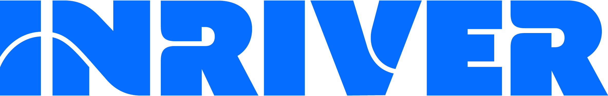
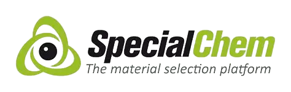
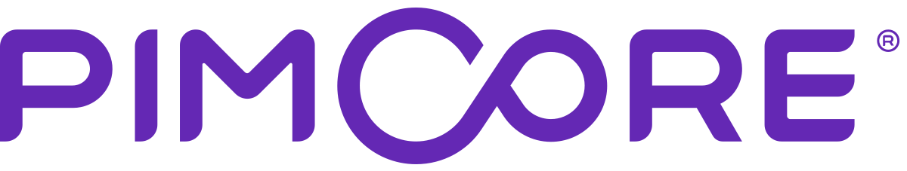
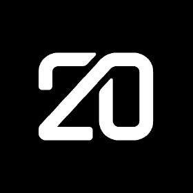

Acheter — clé en main
Build porté par l'éditeur + intégrateur. Time-to-value court, licence récurrente.


Build porté par l'éditeur + intégrateur. Time-to-value court, licence récurrente.


Pimcore self-hosted ; Twenty (CRM déjà déployé) étendu au PIM. Maîtrise long terme.


Web app sur mesure, pilotée par l'IA (Claude Code). 100 % du besoin, sans licence ni intégrateur — infra Azure seule.

Commun à toutes les approches — hors périmètre de l'arbitrage.
Full customBuild (4 mois) + 3 × run annuel, ventilés par poste. L'équipe recrutée (dev/DevOps + data steward) et l'infra servent PIM et CRM : le CRM Twenty n'ajoute que son intégration, pas un run dédié. Capacité existante mutualisée exclue. Source : note §8.
86 k€ build + 175,75 k€/an de run → 613,25 k€ / 3 ans. Run : 0,5 ETP dev/DevOps + 0,4 ETP data steward + licence Akeneo.
PIM home-made + CRM Twenty44 k€ build + 168,5 k€/an de run → 549,5 k€ / 3 ans. Run : 1 ETP dev/DevOps + 0,4 ETP data steward.